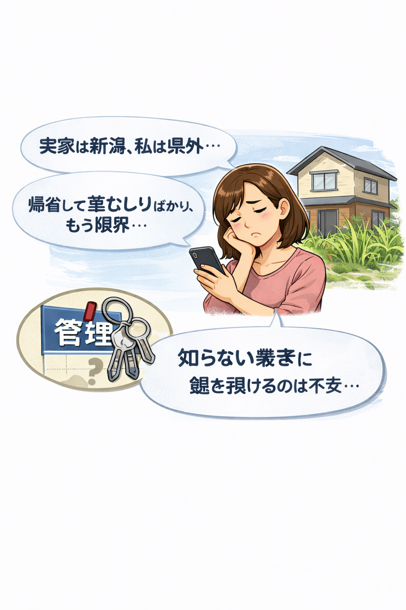
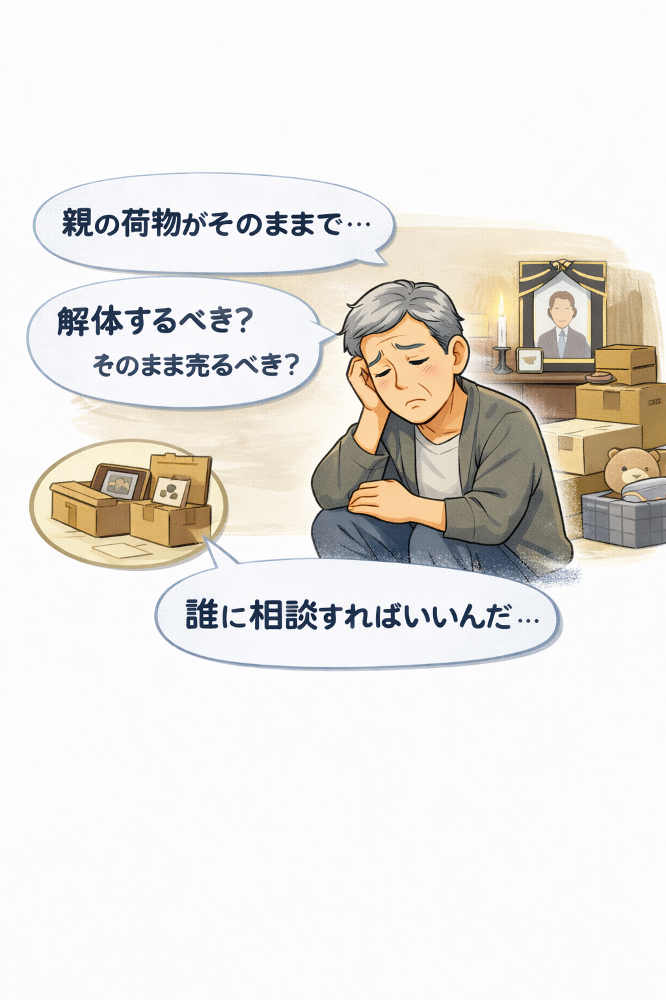

こんなお悩み、ありませんか?
不動産売却でよくあるお困りごとを集めました
1

【売れない・値下げ】の悩み
大手だから安心だと思ったのに、もう半年も売れていない...
最初は「高く売れます」と言っていたのに、最近は「値下げしましょう」の電話ばかり
2

【遠方管理・草むしり】の悩み
実家は新潟、私は県外。草むしりや空気の入れ替えだけに帰省するのはもう限界...
鍵を預けたいけど、知らない業者に任せるのはなんだか怖い
3

【相続・片付け】の悩み
親の荷物がそのままで、何から手をつけていいかわからない
解体すべき？ そのまま売るべき？ 誰に聞けば正解なの？